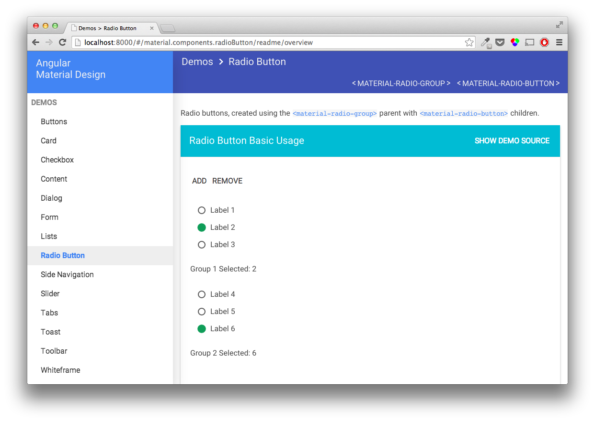
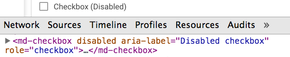

Hello

Angular Accessibility
Marcy Sutton, Seattle, USA
Web Developer, Angular Material Contributor
What is Accessibility?
Everyone can perceive, understand, navigate, and interact with the Web, and they can contribute to the Web.
Accessibility is about
PEOPLE.
#A11Y in Angular Apps
- Write meaningful HTML
- Enable the keyboard
- Handle focus
- Alert the user
- Coverage with tests
Step 1 to writing meaningful HTML
Use Semantic Elements
<md-button tabIndex="-1">
<button>Flat Button</button>
</md-button>
Step 2 to writing meaningful HTML
Use ARIA
Expands HTML's semantic vocabulary
ngAria
// ngAria - ngModel directive
function getRadioReaction() {
if (needsTabIndex) {
needsTabIndex = false;
return function ngAriaRadioReaction(newVal) {
var boolVal = newVal === attr.value;
elem.attr('aria-checked', boolVal);
elem.attr('tabindex', 0 - !boolVal);
};
...
Roles
What does this thing do?
<div role="img" style="background-image...">
States
The current condition of this particular thing
<md-input aria-disabled="true">
Properties
<md-radio-button aria-label="Unsubscribe">
Application Role
Disables a screen reader’s “virtual cursor”
<body role="application"></body>
Keyboard Access

Enable the keyboard.
<div ng-click="sorryKeyboards()"></div> // Non :(
<button ng-click="woohoo()"></button> // Oui! :)
<md-button role="button" tabIndex="0"
ng-click="woohoo()"
ng-keypress="woohoo()">
</md-button>
Don't forget :focus.
[tabIndex="0"] {
color: $linkColor;
&:focus, &:hover {
background-color: $linkColor;
color: $linkActiveColor;
}
}
VirginAmerica.com
Demo
Alerting the User
<live-region level="polite"></live-region>
function liveRegionDirective($scope, $element, $attrs) {
element.attr({
'role' : 'region',
'aria-live': $attrs.level
});
$scope.$on('statusUpdated', function(scope, message) {
$element.html(message.text);
});
}
...
function otherDirective($scope) {
$scope.$broadcast('statusUpdated', message);
}
Angular.js Material Design
Material Checkbox (1/2)
// material.components.checkbox
function MaterialCheckboxDirective($materialAria, ...) {
tAttrs.tabIndex = 0;
tElement.attr('role', 'checkbox');
return function postLink(...) {
$materialAria.expectAttribute(element, 'aria-label');
function keypressListener(ev) {
if (element[0].hasAttribute('disabled')) return;
...
Material Checkbox (2/2)
// material.services.aria
function expectAttribute(element, attrName, defaultValue) {
var node = element[0];
if (!node.hasAttribute(attrName)) {
var hasDefault = angular.isDefined(defaultValue) && defaultValue.length;
if (!hasDefault) {
$log.warn(messageTemplate, attrName, getTagString(node));
$log.warn(node);
} else {
element.attr(attrName, defaultValue.trim());
}
}
}
About that disabled attribute

// chrome://accessibility/
AXCheckBox AXRoleDescription='check box'
AXEnabled='1' AXFocused='0' AXRequired='0'
AXTitle='Checkbox (Disabled)' AXValue='0'
AXDescription='Disabled checkbox'
Disable with ARIA
// material.components.checkbox
function MaterialCheckboxDirective($materialAria, ...) {
tAttrs.tabIndex = 0;
tElement.attr('role', 'checkbox');
scope.$watch('disabled', function(newValue){
element.attr('aria-disabled', newValue);
})
...
Testing for A11Y
- Roles
- Labels
- Watched properties
- Interactions
Assert Functionality
// material/components/radioButton.spec.js
describe('radioButton', function() {
beforeEach(module('material.components.radioButton'));
it('should be operable via arrow keys', inject(function($compile, $rootScope) {
var element = $compile(
'<md-radio-group ng-model="color">' +
'<md-radio-button value="blue"></md-radio-button>' +
'<md-radio-button value="green"></md-radio-button>' +
'</md-radio-group>'
)($rootScope);
$rootScope.$apply(function(){
$rootScope.color = 'blue';
});
var rbGroupElement = element.eq(0);
TestUtil.triggerEvent(rbGroupElement, "keydown", {keyCode: Constant.KEY_CODE.RIGHT_ARROW});
expect($rootScope.color).toEqual('green');
}));
});
...
// material/config/test-utils.js
var TestUtil = {
triggerEvent: function (element, eventName, eventData) {
eventData = eventData || {};
var e = $.extend({}, $.Event(eventName), eventData);
if(eventData.keyCode){
e.which = eventData.keyCode;
}
element.trigger(e);
}
}
Tools
- Your Keyboard
- Android: TalkBack
- iOS: VoiceOver
- Mac: VoiceOver
- Windows: JAWS, WindowEyes, NVDA